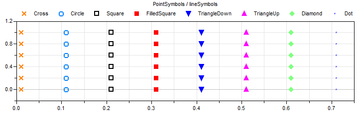
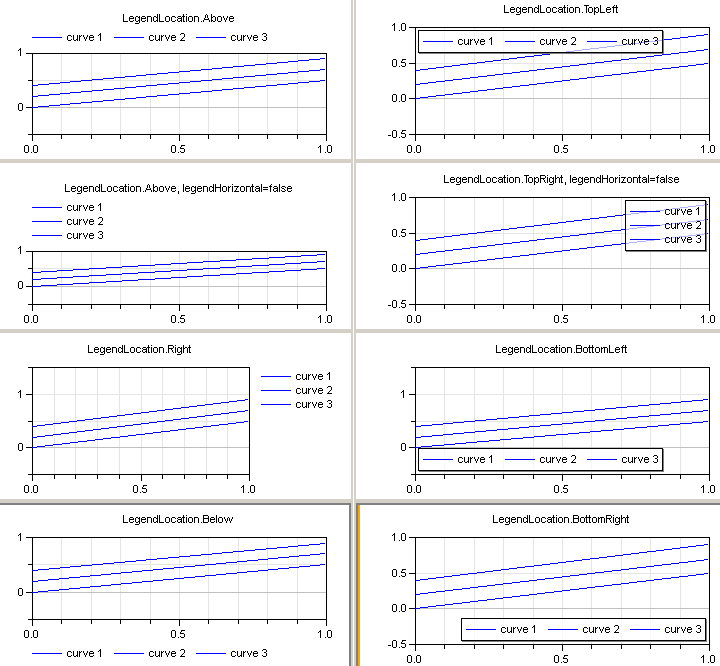

This package contains type definitions. Generally, the enumeration type is used to assign a unique choice of parameter within a model.
Extends from Modelica.Icons.Package (Icon for standard packages).| Name | Description |
|---|---|
| Drawing unit specifing the nominal size in [mm] | |
| Resolution of image in pixel per inch (screen) or dots per inch (printer) | |
| LinePattern | Choices for line pattern |
| PointSymbol | Choices for point symbol |
| LegendLocation | Choices for legend location |
All size information for plotting, such as width or height of a window or the thickness of a line, are defined by type DrawingUnit_mm. The recommended interpretation is that the DrawingUnit is the unscaled size in a document or on printer in [mm]. For example, if the width of a diagram is 120, and the diagram is pasted into a Word or PowerPoint document, then the width of the diagram in the document is 120 mm.
Extends from Modelica.Icons.TypeReal (Icon for Real types).
| Name | Description |
|---|---|
| quantity | |
| unit |
"ImageResolution_dpi" defines the mapping of a length coordinate to the resolution of the output device. The resolution [dpi] is defined as "dots-per-inch" and therefore a length L_mm defined in [mm] is mapped to a length L_dot in dots (or pixel) with the formula:
L_dot = round(ImageResolution_dpi/25.4 * L_mm)
where function round(..) rounds to the nearest integer. Typical values are "96 dpi" (for screen) or "600 dpi" for printer. For example if an "ImageResolution = 96 dpi" shall be used for a screen, then 1 mm is mapped to 4 pixel.
Extends from Modelica.Icons.TypeReal (Icon for Real types).
| Name | Description |
|---|---|
| quantity |
Enumeration to define the line pattern, that is the line style how the defined points are connected together by a polyline. Possible values:
| Types.LinePattern. | Meaning |
|---|---|
| None | Points are not connected |
| Solid | Points are connected with a solid line |
| Dash | Points are connected with a dash line |
| Dot | Points are connected with a dotted line |
| DashDot | Points are connected with a dash-dotted line |
| DashDotDot | Points are connected with a dash-dotted-dotted line |

Enumeration to define the style of the symbol to mark a point in a diagram. Possible values:
| Types.PointSymbol. | Meaning |
|---|---|
| None | No symbol (point is not explicitely marked) |
| Cross | x |
| Circle | o |
| Square | Non-filled square |
| FilledSquare | Filled square |
| TriangleDown | Filled triangle pointing downwards |
| TriangleUp | Filled triangle pointing upwards |
| Diamond | Filled diamond |
| Dot | . |

Enumeration to define the legend location. Possible values:
| Types.LegendLocation. | Meaning |
|---|---|
| Above | Above diagram |
| Right | Right of diagram |
| Below | Below of diagram |
| TopLeft | Top left corner of diagram |
| TopRight | Top right corner of diagram |
| BottomLeft | Bottom left corner of diagram |
| BottomRight | Bottom right corner of diagram |

Automatically generated Tue Oct 01 16:03:16 2013.